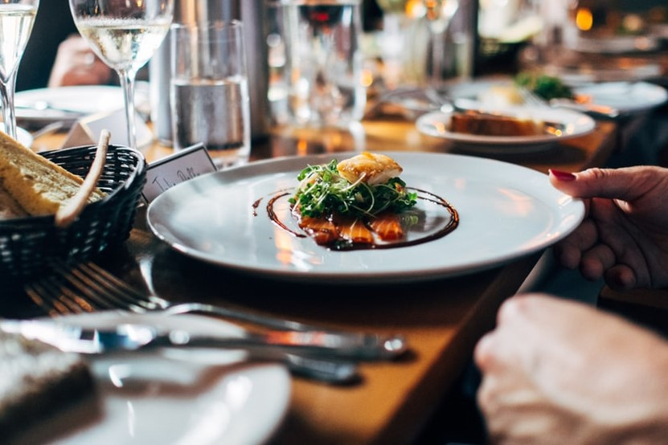

Breakfast
Breakfast is the first meal of a day. So , the breakfast should be nutritious ,light and also gives us feeling of being energetic.While an American traditional breakfast has pancakes, bacon, and eggs, the Spanish "traditional" breakfast consists of the vastly popular churros, served sprinkled with sugar or dunked in hot chocolate. Spaniards eat their lunch, or comida, between 2:00 and 4:00 in the afternoon. A typical breakfast might include café con leche (strong coffee with hot, frothy milk), bollos (sweet rolls) with jam, toast with jam or mild cheese, or simply "Maria" crackers dunked in hot milk. Some might enjoy sweet and lemony magdalenas (think French Madeleines) from the neighborhood bakery. Yet, it is now very common (and more economical) to buy bags of these petite, fluffy, cupcake-like cakes in the supermarkets. Generally, breakfast in Spain is eaten at home, before dashing off to work or school. However, you may see some workers duck into the closest cafeteria around 10 a.m. to enjoy a quick mid-morning coffee break.
Tapas(Little Meals)
Lunch (La Comida) The midday meal or la comida, as it is called in Spain, is the largest meal of the day. It is definitely a big meal and typically includes multiple courses and wine. Since Spanish lunches are always large, and courses come one at a time, it is important to pace yourself. Tapas are eaten well after breakfast but before the big mid-afternoon lunch. They are small plates like canapés or finger food and may be warm or cold dishes. Tapas vary greatly from region to region and season to season. Tapas time generally includes bar-hopping to taste wine and chat. A different tapa is ordered at each stop. This time is about socializing with friends and neighbors as it is about the quality of the food. It is not uncommon for friends to have a regular circuit by meeting up at their favorite bars.
Lunches
The midday meal or la comida, as it is called in Spain, is the largest meal of the day. It is definitely a big meal and typically includes multiple courses and wine. Since Spanish lunches are always large, and courses come one at a time, it is important to pace yourself. Like Italians, Spaniards believe in taking their time and enjoying their meals. That is why you can expect lunch to last an hour and a half or longer. Traditionally, Spaniards have a two- to three-hour break from work or school in order to enjoy lunch. They also take a short nap or siesta. Essentially, the entire country closes up shop from about 1:30 to 4:30 p.m. The siesta is a tradition that goes back centuries from the days when most people worked in agriculture and air conditioning did not exist. It is easy to understand why folks needed fuel from a large meal as well as a rest from the hot Spanish sun before returning to work. Everyone in Spain enjoyed this afternoon break from school kids to shop workers and government officials. Most Spaniards still enjoy a break and large meal, but life in Spain is changing. In larger cities like Madrid and Barcelona, many people spend over an hour commuting to and from work, making it impossible to go home for a meal and siesta. Because of this, Spanish government employees in Madrid now work a standard eight-hour day with a one-hour lunch break.
Dinner
Dinner (la cena) is a significantly lighter meal than lunch. It is generally eaten between 9 p.m. and midnight. The portions served at dinner are usually smaller, and plates are much simpler. Dinner might include fresh fish or seafood or a portion of roast chicken or lamb with fried potatoes or rice. An omelet and fish with a green salad on the side are also quite common. A simple and quick dish, commonly eaten at dinner is arroz cubano, a mound of white rice, topped withtomato sauce and a fried egg. Green salad and a vegetable dish are standard at both lunch and dinner. A lighter dessert of fresh fruit or flan (Spanish vanilla custard) may also be eaten.
After Meals

Spaniards are night owls. The typical Spaniard does not get to bed until around midnight. On the weekends, holidays, and during the summer months, it is not unusual for a Spanish family to turn in after 3 a.m. So, after the late-night dinner, Spaniards continue their socializing in neighborhood cafés and taverns or go out to a nightclub or pub. The last stop on the way home from an evening of fun might be to a churreria or churro stand. Churros are fried pastries that are made out of fried dough. The closest thing that we have in the U.S. would be fritters or donuts. Fresh churros, bought from a street vendor or sidewalk café, are served hot and sprinkled with sugar.